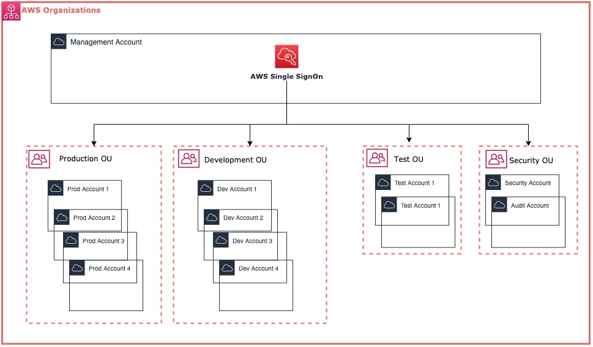

<div class="container">
    <div class="row mt-4">
        <div class="col-md-12">
            <div class="card">
                <h5 class="card-header">AWS Single Sign-On (SSO)</h5>
                <div class="card-body">
                <h5 class="card-title">Using SSO to access your AWS Accounts</h5>
                <p class="card-text">AWS Single Sign-On (AWS SSO) is where you create, or connect, your workforce identities in AWS once and manage access centrally 
                    across your AWS organization. You can choose to manage access just to your AWS accounts or cloud applications. You can create user identities 
                    directly in AWS SSO, or you can bring them from your Microsoft Active Directory or a standards-based identity provider, such as Okta Universal 
                    Directory or Azure AD. With AWS SSO, you get a unified administration experience to define, customize, and assign fine-grained access. 
                    Your workforce users get a user portal to access all of their assigned AWS accounts, Amazon EC2 Windows instances, or cloud applications. 
                    AWS SSO can be flexibly configured to run alongside or replace AWS account access management via AWS IAM.
                </p>
                <p>It’s easy to get started with AWS SSO. With just a few clicks in the management console, you can connect AWS SSO to your existing identity source 
                    and configure permissions that grant users access to their assigned AWS accounts, cloud applications, and other SAML-based applications that you add to AWS SSO.</p>
                <p>The text above is an excerpt of the official <a href="https://aws.amazon.com/single-sign-on/" target="blank">AWS SSO documentation...</a></p>
                <p>In my case, I'm using AWS SSO to manage my multiple accounts within my AWS Organization</p>
                <p> </p>
                <a href="https://cloudbean.awsapps.com/start" target="blank" class="btn btn-primary">Go to CloudBean Portal</a>
                </div>
            </div>
        </div>
    </div>
</div>
